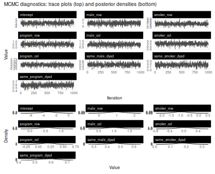
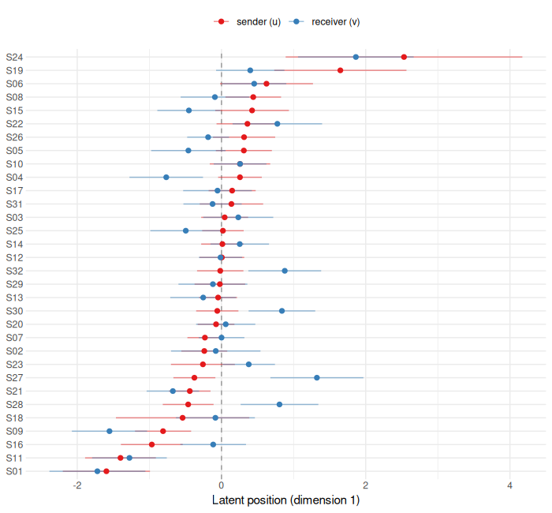
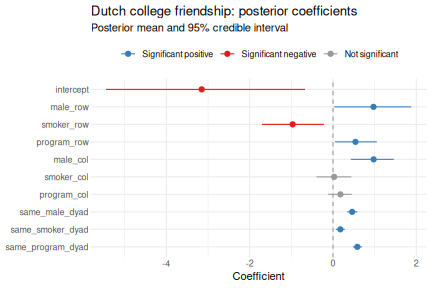
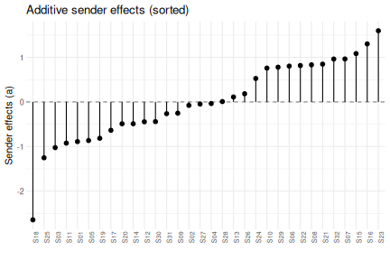

lame Overview
Cassy Dorff, Shahryar Minhas, and Tosin Salau
2026-11-17
Source:vignettes/articles/lame-overview.Rmd
lame-overview.RmdPackage Overview
The lame package provides tools for fitting
Longitudinal Additive and
Multiplicative Effects models to
network data observed over time. If you study relationships between
actors (countries trading with each other, legislators co-sponsoring
bills, students forming friendships across semesters) and you have
repeated observations of those relationships, lame is
designed for you.
The modeling approach builds on the Additive and Multiplicative
Effects (AME) framework developed by Peter Hoff, whose amen package
provides the foundational cross-sectional implementation.
lame extends that framework with:
- Longitudinal data: panel networks observed across multiple time periods, potentially with actors entering and leaving the sample.
-
Dynamic effects: latent positions and baseline
activity levels can evolve via AR(1) processes (
dynamic_uvanddynamic_ab). - C++ acceleration: core sampling routines in Rcpp/RcppArmadillo.
- Bipartite networks: two-mode networks (e.g., countries and treaties) with separate latent spaces for row and column nodes.
-
ggplot2-based diagnostics:
trace_plot,gof_plot,ab_plot, anduv_plotreturn standard ggplot2 figures you can theme and extend. -
Standard S3 methods:
coef(),confint(),fitted(),residuals(),predict(), andsimulate()work as you would expect from any R model object.
The package works with netify for
data preparation.
Migrating from amen
Both amen and lame export an
ame() function; if both packages are attached, a startup
message reminds you that unqualified ame(...) calls
dispatch to whichever was attached last, so write
lame::ame(...) to be explicit. Old amen
scripts largely run unchanged – the most common porting fix is
family = "nrm" becoming family = "normal" (the
short forms are accepted as aliases, with a message), and
verbose = takes the place of print =. The full
mapping of argument and output differences lives in the Migration
from amen sections of ?ame and ?lame.
Application: Dutch College Friendships
To see how lame works in practice, we analyze the
Dutch college friendship network (van de Bunt, van
Duijn, and Snijders 1999), a panel of 32 students who arrived as
strangers and rated each other’s friendship at seven time points. (We
drop the cold-start first wave, when the students barely knew each other
and almost no ties exist; six waves remain.) The substantive question is
whether students sort by gender, smoking status, and academic program,
and whether residual clustering remains once those covariates are
absorbed.
The dataset includes:
-
Y: directed friendship ratings on a -1 to 4 scale
(-1 a negative/troubled relationship, 0 no or uncertain tie, 1-4
increasing friendship). We binarize any positive rating to a tie
(
(Y > 0) * 1), so the rare -1 ratings fold in with 0 as “no tie”. -
X: three node-level attributes:
male,smoker,program. - We construct three dyadic homophily indicators from
the node attributes:
same_male,same_smoker,same_program.
library(lame)
library(ggplot2)
set.seed(6886)
data("dutchcollege")
n <- nrow(dutchcollege$Y)
T_all <- dim(dutchcollege$Y)[3]
actor_names <- sprintf("S%02d", seq_len(n))
# binarize and drop the cold-start wave (t = 1 has almost no ties)
Y <- lapply(2:T_all, function(t) {
Yt <- (dutchcollege$Y[, , t] > 0) * 1
diag(Yt) <- NA
rownames(Yt) <- colnames(Yt) <- actor_names
Yt
})
names(Y) <- paste0("t", 2:T_all)
# nodal covariates passed identically as sender and receiver
X_node <- dutchcollege$X
rownames(X_node) <- actor_names
Xrow <- lapply(seq_along(Y), function(t) X_node)
Xcol <- Xrow
# dyadic homophily indicators
same_male <- outer(X_node[, "male"], X_node[, "male"], "==") * 1
same_smoker <- outer(X_node[, "smoker"], X_node[, "smoker"], "==") * 1
same_program <- outer(X_node[, "program"], X_node[, "program"], "==") * 1
Xdyad_one <- array(
0,
dim = c(n, n, 3),
dimnames = list(
actor_names,
actor_names,
c("same_male", "same_smoker", "same_program")
)
)
Xdyad_one[, , 1] <- same_male
Xdyad_one[, , 2] <- same_smoker
Xdyad_one[, , 3] <- same_program
Xdyad <- lapply(seq_along(Y), function(t) Xdyad_one)The friendship network’s average density rises across the panel as students settle in, though the trajectory is not monotone (density bounces between roughly 0.40 and 0.63 across the six waves):
sapply(Y, function(y) round(mean(y, na.rm = TRUE), 2))
#> t2 t3 t4 t5 t6 t7
#> 0.40 0.52 0.47 0.49 0.63 0.51Fitting the Model
We fit a binary probit AME model with sender random effects
(rvar), receiver random effects (cvar), dyadic
correlation (dcor), and a one-dimensional latent space
(R = 1). The random effects capture sender heterogeneity
(some students simply nominate more friends) and receiver heterogeneity
(some students are nominated more often), while the latent space picks
up residual clustering: students who befriend similar people for reasons
the observed covariates do not capture. (Why R = 1 and not
2? See the Latent Space section below.)
The chain has 2,000 burn-in and 60,000 production iterations, and
every 60th production iteration is stored (1,000 draws).
seed = 1 fixes the chain: lame() seeds its own
sampler, so set.seed() does not change it.
chains = 1 runs the single chain behind the stored fit (the
package default is two chains, seeded seed and
seed + 1000 and compared by
before the fit returns). The chain meets the convergence thresholds (see
Checking Convergence below). It takes about nine minutes on one core, so
this vignette loads the fit stored with the package. The call that
produced it is below; data-raw/lame-overview-fits.R in the
package’s source repository runs it, with the other fits in this
vignette, and rebuilds the stored file.
fit <- lame(
Y = Y,
Xdyad = Xdyad,
Xrow = Xrow,
Xcol = Xcol,
family = "binary",
rvar = TRUE,
cvar = TRUE,
dcor = TRUE,
posterior_opts = posterior_options(save_ab = TRUE, save_UV = TRUE, thin_ab = 5),
R = 1,
symmetric = FALSE,
burn = 2000,
nscan = 60000,
odens = 60,
seed = 1,
chains = 1,
verbose = FALSE,
plot = FALSE
)
stored <- readRDS("lame-overview-fits.rds")
fit <- stored$fitThe stored copy keeps the additive-effect and latent-position draws
of every fifth stored draw (200 draws; thin_ab = 5), which
is what simulate(), gof_temporal(),
latent_positions() and prediction_draws_long()
use below. It is trimmed to what this vignette reads; forecasting with
predict(fit, h = ) is covered in
vignette("forecasting").
Interpreting the Results
summary(fit)
#>
#> ── Longitudinal AME model summary ──────────────────────────────────────────────
#>
#> ── Call
#> Y ~ dyad(same_male, same_smoker, same_program) + row(male, smoker, program) + col(male, smoker, program) + a[i] + b[j] + rho*e[ji] + U[i,1:1] %*% V[j,1:1], family = 'binary'
#>
#> ── Model
#> • Time periods: 6
#> • Family: binary
#> • Mode: unipartite
#> ℹ Static fit: U, V, a and b are shared across the 6 periods, and per-period
#> predictions vary through the per-period covariates. `dynamic_uv = TRUE` and
#> `dynamic_ab = TRUE` let them vary over time.
#>
#> ── Regression coefficients
#> Estimate StdError z_value p_value CI_lower CI_upper
#> intercept -3.152 1.209 -2.608 0.009 -5.45 -0.671 **
#> male_row 0.972 0.468 2.078 0.038 0.031 1.878 *
#> smoker_row -0.968 0.381 -2.541 0.011 -1.702 -0.22 *
#> program_row 0.54 0.252 2.139 0.032 0.049 1.051 *
#> male_col 0.975 0.259 3.76 0 0.427 1.459 ***
#> smoker_col 0.028 0.219 0.126 0.9 -0.396 0.439
#> program_col 0.178 0.146 1.219 0.223 -0.115 0.45
#> same_male_dyad 0.46 0.06 7.656 0 0.341 0.585 ***
#> same_smoker_dyad 0.177 0.055 3.232 0.001 0.069 0.283 **
#> same_program_dyad 0.583 0.054 10.711 0 0.478 0.694 ***
#> ---
#> Signif. codes: 0 '***' 0.001 '**' 0.01 '*' 0.05 '.' 0.1 ' ' 1
#> ℹ Stars are a visual hint from the posterior mean / SD only; for inference use
#> the credible intervals.
#>
#> ── Variance components
#> Estimate StdError
#> va 0.907 0.269
#> cab 0.293 0.120
#> vb 0.284 0.085
#> rho 0.325 0.041
#> ve 1.000 0.000
#> va = sender variance, cab = sender-receiver covariance, vb = receiver
#> variance, rho = dyadic correlation, ve = residual varianceA lot lands at once, so let’s walk through it.
Intercept. The probit intercept is the latent linear
predictor when every covariate is zero. The covariates here are
uncentered (program is coded 2-4 and is never zero), so
that corner sits well outside the observed data; the familiar
qnorm(density) rule of thumb instead describes the
predictor at the average covariate profile. The two reconcile
once you add back the mean covariate contribution:
bhat <- colMeans(fit$BETA)
slice_means <- apply(fit$X[[1]], 3, mean, na.rm = TRUE) # mean of each design column
centroid_lp <- sum(bhat * slice_means[names(bhat)]) # predictor at the average profile
c(
intercept = unname(bhat["intercept"]),
centroid_lp = centroid_lp,
qnorm_density = qnorm(mean(unlist(Y), na.rm = TRUE))
)
#> intercept centroid_lp qnorm_density
#> -3.15206700 -0.06756420 0.00842291The intercept itself is strongly negative, but the predictor at the
average covariate profile (centroid_lp) sits close to
qnorm(density) – the uncentered covariates account for
nearly the entire gap. The intercept absorbs the mean covariate
contribution; it is not a baseline probability. Center the covariates if
you want it to read as one, and read predicted probabilities off
predict(fit, type = "response").
Homophily. The three dyadic coefficients
(same_male, same_smoker,
same_program) measure whether students of the same type are
more likely to be friends, holding the sender, receiver, and latent
positions fixed. Positive values mean homophily. All three are positive
and their 95% credible intervals exclude zero: same_program
0.58 (95% interval 0.48 to 0.69), same_male 0.46 (95%
interval 0.34 to 0.58) and same_smoker 0.18 (95% interval
0.07 to 0.28). Program homophily is the largest of the three, consistent
with students bonding around shared coursework.
Nodal covariates. male_row /
male_col measure whether male students are unusually active
senders or popular receivers, and similarly for smoker and
program. With only 32 students, the credible intervals on
individual nodal effects are wide: four of the six exclude zero
(male_row, smoker_row,
program_row, male_col), and those of
smoker_col and program_col include it.
Variance components. va (sender
variance) and vb (receiver variance) quantify how much
students differ in sociability and popularity beyond what the covariates
explain. The dyadic correlation rho captures reciprocity;
in friendship networks rho > 0 is the rule rather than
the exception, and here its posterior mean is 0.33 (95% interval 0.24 to
0.40).
Checking Convergence
The model is estimated via MCMC, so convergence checks come first.
trace_plot shows the sampled values over iterations (top
panels) and the corresponding posterior densities (bottom panels) for
each parameter.
trace_plot(fit, params = "beta")
Trace plots should bounce around a stable mean without long-term trends or sticky regions, and density plots should be smooth and unimodal. Numerically, the checks are split- < 1.01 for every monitored parameter and bulk / tail ESS 400 per chain; the next section computes them. The traces above show no trend or sticky stretch, and the densities are smooth and unimodal.
Bayesian-ecosystem diagnostics:
posterior::as_draws()
lame registers as_draws() methods so any
fit drops straight into the Stan-era diagnostic ecosystem
(posterior, bayesplot,
tidybayes): posterior::summarise_draws() gives
per-parameter posterior summaries,
split-,
and bulk / tail ESS in one call.
library(posterior)
#> This is posterior version 1.7.0
#>
#> Attaching package: 'posterior'
#> The following object is masked from 'package:lame':
#>
#> as_draws
#> The following objects are masked from 'package:stats':
#>
#> mad, sd, var
#> The following objects are masked from 'package:base':
#>
#> %in%, match
draws <- posterior::as_draws(fit) # draws_array [iter, chain, var]
posterior::summarise_draws(draws) # rhat, ess_bulk, ess_tail per param
#> # A tibble: 15 × 10
#> variable mean median sd mad q5 q95 rhat ess_bulk
#> <chr> <dbl> <dbl> <dbl> <dbl> <dbl> <dbl> <dbl> <dbl>
#> 1 intercept -3.15 -3.18 1.21 1.12 -5.13 -1.15 1.000 948.
#> 2 male_row 0.972 0.979 0.468 0.470 0.195 1.75 1.00 1097.
#> 3 smoker_row -0.968 -0.983 0.381 0.379 -1.58 -0.332 1.000 1013.
#> 4 program_row 0.540 0.547 0.252 0.236 0.102 0.946 1.00 946.
#> 5 male_col 0.975 0.981 0.259 0.268 0.550 1.39 0.999 982.
#> 6 smoker_col 0.0276 0.0304 0.219 0.211 -0.337 0.371 1.00 1053.
#> 7 program_col 0.178 0.182 0.146 0.151 -0.0624 0.411 1.00 918.
#> 8 same_male_dyad 0.460 0.461 0.0601 0.0569 0.360 0.563 0.999 1012.
#> 9 same_smoker_dyad 0.177 0.177 0.0546 0.0525 0.0827 0.265 1.00 684.
#> 10 same_program_dy… 0.583 0.584 0.0544 0.0556 0.496 0.669 1.00 933.
#> 11 va 0.907 0.871 0.269 0.243 0.559 1.39 0.999 873.
#> 12 cab 0.293 0.274 0.120 0.109 0.132 0.512 1.00 790.
#> 13 vb 0.284 0.272 0.0851 0.0802 0.169 0.442 1.01 772.
#> 14 rho 0.325 0.325 0.0405 0.0400 0.259 0.395 1.00 759.
#> 15 ve 1 1 0 0 1 1 NA NA
#> # ℹ 1 more variable: ess_tail <dbl>All 14 monitored parameters have split
of at most 1.006 and bulk and tail ESS of at least 684; the lowest is
that of same_smoker_dyad. ve is the latent
residual variance, fixed at 1 by probit identification, so its draws are
constant and posterior reports NA for its
and ESS.
A single chain has chain = 1, so
is the within-chain
split-.
A second chain, fitted with the same call and seed = 2, is
stored as stored$chain2; binding it to the first gives
and ESS across independently initialised chains:
chain2 <- posterior::as_draws_array(posterior::as_draws_matrix(stored$chain2))
both <- posterior::bind_draws(posterior::as_draws(fit), chain2, along = "chain")
across_live <- posterior::summarise_draws(both, "rhat", "ess_bulk", "ess_tail")
across_live <- across_live[!is.na(across_live$rhat), ]
round(
c(
max_rhat = max(across_live$rhat),
min_ess_bulk = min(across_live$ess_bulk),
min_ess_tail = min(across_live$ess_tail)
),
3
)
#> max_rhat min_ess_bulk min_ess_tail
#> 1.003 1368.176 1529.920Across the two chains the largest is 1.003, and the lowest bulk and tail ESS (both chains together) are 1368 and 1530. The other three models fitted in this vignette were run the same way, two seeds each, and every chain of every model meets both thresholds:
d <- stored$diagnostics
label <- c(
fit = "R = 1, estimated reciprocity", fit_noUV = "R = 0, estimated reciprocity",
loo_R0 = "R = 0, independent residuals", loo_R1 = "R = 1, independent residuals"
)
chain_summary <- do.call(rbind, lapply(names(label), function(m) do.call(rbind, lapply(c("seed 1", "seed 2", "both"), function(ch) {
x <- d[d$model == m & d$chain == ch, ]
data.frame(
model = label[[m]],
chain = ch,
max_rhat = max(x$rhat),
min_ess_bulk = min(x$ess_bulk),
min_ess_tail = min(x$ess_tail)
)
}))))
knitr::kable(chain_summary, digits = c(0, 0, 3, 0, 0), row.names = FALSE)| model | chain | max_rhat | min_ess_bulk | min_ess_tail |
|---|---|---|---|---|
| R = 1, estimated reciprocity | seed 1 | 1.005 | 684 | 781 |
| R = 1, estimated reciprocity | seed 2 | 1.002 | 667 | 662 |
| R = 1, estimated reciprocity | both | 1.003 | 1368 | 1530 |
| R = 0, estimated reciprocity | seed 1 | 1.007 | 807 | 607 |
| R = 0, estimated reciprocity | seed 2 | 1.004 | 892 | 796 |
| R = 0, estimated reciprocity | both | 1.003 | 1794 | 1551 |
| R = 0, independent residuals | seed 1 | 1.005 | 765 | 786 |
| R = 0, independent residuals | seed 2 | 1.004 | 834 | 713 |
| R = 0, independent residuals | both | 1.005 | 1786 | 1662 |
| R = 1, independent residuals | seed 1 | 1.007 | 538 | 635 |
| R = 1, independent residuals | seed 2 | 1.004 | 468 | 569 |
| R = 1, independent residuals | both | 1.002 | 1018 | 1272 |
The chains differ in length: the two models with estimated
reciprocity run 60,000 production iterations, and the two
independent-residual models behind the model comparison run 100,000,
because the latent-space version of the latter mixes more slowly (the
header of data-raw/lame-overview-fits.R explains the
choice).
Goodness of Fit
The gof_plot function compares observed network
statistics to their posterior predictive distributions: can the model
reproduce emergent structural features like degree heterogeneity,
transitivity, and reciprocity, not just the dyad-level
relationships?
gof_plot(fit)
For a longitudinal model, gof_plot shows these
statistics across time, with three elements per panel: the
observed series is a solid black line with filled
points, the posterior-predictive median is a dashed
grey line, and the 95% credible interval is a grey
band (width set by credible.level). Observed
values inside the band are features the model reproduces; values outside
flag structure it is missing, which is itself a substantive finding.
Reading the figure: triadic dependence is inside the band at 3 of 6 periods. Sender degree heterogeneity is above the band at 5 periods, and transitivity is above it at 5 periods. Receiver heterogeneity is inside the band at 2 periods; dyadic dependence is inside at 1, above at 3, and below at 2. The observed and simulated statistics use the same cells in each period.
The chain meets the convergence thresholds, so the periods outside
the bands describe the fitted model, not the sampler. AME assumes
conditional independence between distinct dyads (the two directions
within a dyad can remain correlated), so triangle closure must be
represented by clustering of the latent positions; ERGMs model it
directly via terms like gwesp. The two classes are
complementary: ERGM for triangle-closure questions, AME for stable,
non-degenerate estimates with explicit actor heterogeneity and a
coherent posterior to forecast or simulate from.
Posterior-predictive temporal-trend test:
gof_temporal()
The figure read above is qualitative. gof_temporal()
gives a scalar check on the temporal trend in a chosen
statistic: it fits an OLS slope to the observed per-period series,
recomputes that slope in posterior-predictive replicate panels drawn via
simulate(fit), and returns a two-sided posterior-predictive
p-value – near 0 when the observed slope is unreachable under the model,
well away from 0 when it is central in the predictive distribution.
# density rises across the panel, so it is the natural trend to test
gt_density <- gof_temporal(fit, stat = "density", n_rep = 100, seed = 6886)
gt_density # stat, observed slope, n_rep and p_pp
#>
#> ── Temporal-trend posterior-predictive check ──
#>
#> • Statistic: "density"
#> • Observed slope (per-period): 0.0258
#> • Replicates: 100
#> • Posterior-predictive p-value (two-sided): 0
#> Observed temporal trend is incompatible with the fitted model.The observed slope is 0.0258 per period, with a two-sided
posterior-predictive tail fraction of 0: the 100 replicate slopes run
from -0.0082 to 0.0084, and none reaches the observed one. The check
compares the same observed cells in each period and replicate. Small
values indicate that the fitted model rarely reproduces the observed
trend, as here; compare a model with dynamic_beta or
time-varying covariates using the Dynamic
Effects workflow.
Latent Space
The multiplicative effects capture association patterns beyond what
the covariates and additive effects explain. We fit R = 1,
so each student’s sender position
()
and receiver position
()
is a single number, plotted on one axis. Why R = 1 and not
R = 2? Extra dimensions can absorb signal the dyadic
covariates would otherwise pick up, and a one-dimensional space is
easier to display and interpret. To let the data choose a rank, compare
fits with loo::loo_compare() out of sample, as done for
R = 1 versus R = 0 at the end of this
vignette.
The display for a 1-D space is a ranked dot plot: every student’s
sender and receiver position with a 95% interval, ordered by sender
position. The intervals come from the 200 saved U/V draws
(thin_ab = 5 in the fit above).
lp1 <- subset(latent_positions(fit), dimension == 1)
ordv <- with(subset(lp1, type == "U"), actor[order(value)])
lp1$actor <- factor(lp1$actor, levels = ordv)
ggplot(lp1, aes(x = value, y = actor, color = type)) +
geom_vline(xintercept = 0, linetype = 2, color = "grey60") +
geom_errorbar(
aes(
xmin = value - 2 * posterior_sd,
xmax = value + 2 * posterior_sd
),
width = 0,
alpha = 0.5,
orientation = "y"
) +
geom_point(size = 1.8) +
scale_color_manual(
values = c(U = "#E41A1C", V = "#377EB8"),
labels = c(U = "sender (u)", V = "receiver (v)")
) +
labs(x = "Latent position (dimension 1)", y = NULL, color = NULL) +
theme_bw() +
theme(
panel.border = element_blank(),
axis.line = element_blank(),
axis.ticks = element_blank(),
legend.position = "top",
plot.title = element_text(hjust = 0),
plot.subtitle = element_text(hjust = 0),
plot.caption = element_text(hjust = 0)
)
The sender posterior means range from -1.6 to 2.53. The sender and
receiver means have correlation 0.61 in this parameterization. The 95%
intervals of 9 of the 32 sender positions and 11 of the 32 receiver
positions exclude zero, and the sender intervals of 113 of the 496 pairs
of students do not overlap. The likelihood depends on the positions only
through the products
,
so the sign of the pair
is not identified; in all 200 stored draws the sender positions
correlate positively with their posterior means (lowest correlation
0.78), so the draws do not flip sign and the intervals are not widened
by flips. Students whose sender and receiver positions differ are an
interesting starting point for studying asymmetric cluster
participation. These static positions are pooled across all six waves.
If you suspect students moved through the space, use
dynamic_uv = TRUE and compare invariant products and
predictions across independently seeded chains (see the dynamic
effects vignette).
Extracting Latent Positions
If you need the estimated latent positions in a tidy format (for
custom plots, merging with external data, or exporting to other tools),
the latent_positions() function returns a data frame:
lp <- latent_positions(fit)
head(lp)
#> actor dimension time value posterior_sd type
#> 1 S01 1 1 -1.59588275 0.4623493 U
#> 2 S02 1 1 -0.23807874 0.1694207 U
#> 3 S03 1 1 0.04418366 0.1660575 U
#> 4 S04 1 1 0.25645125 0.1603640 U
#> 5 S05 1 1 0.31027303 0.2230363 U
#> 6 S06 1 1 0.62419689 0.3641167 UEach row gives one actor’s position on one latent dimension at one
time point, with a type column distinguishing the sender
position ("U") from the receiver position
("V"). The posterior_sd column is populated
because the fit saved its U/V draws
(posterior_opts = posterior_options(save_ab = TRUE, save_UV = TRUE, thin_ab = 5));
without that option it is NA with a one-time message
telling you how to refit. A static fit returns a single slice (labelled
time = 1) that applies to every period; dynamic fits
(dynamic_uv = TRUE) return each time point separately, and
procrustes_align() removes the arbitrary per-period
rotations so that trajectories across time are interpretable (see the dynamic
effects vignette).
Tidy-data round-trip via netify
lame uses the netify package for tidy
network data: build a netify object from an edgelist and pass it
directly to lame() or ame(). On the way out,
tidy(), autoplot(), and
prediction_draws_long() give you
broom-/ggplot-/marginaleffects-ready output.
Entry: tidy edgelist → lame()
library(netify)
# the panel as a tidy edgelist with one row per ordered dyad and wave
edges_long <- do.call(rbind, lapply(seq_along(Y), function(t) {
Yt <- Y[[t]]
idx <- which(!is.na(Yt), arr.ind = TRUE)
data.frame(
from = rownames(Yt)[idx[, 1]],
to = colnames(Yt)[idx[, 2]],
year = names(Y)[t],
tie = as.integer(Yt[idx]),
same_program = Xdyad[[t]][, , "same_program"][idx]
)
}))
head(edges_long)
#> from to year tie same_program
#> 1 S02 S01 t2 0 0
#> 2 S03 S01 t2 0 0
#> 3 S04 S01 t2 0 0
#> 4 S05 S01 t2 0 0
#> 5 S06 S01 t2 0 0
#> 6 S07 S01 t2 1 0
netlet <- netify::netify(
edges_long,
actor1 = "from",
actor2 = "to",
time = "year",
weight = "tie",
dyad_vars = "same_program",
symmetric = FALSE,
mode = "unipartite",
missing_to_zero = FALSE,
output_format = "longit_array"
)
# a netify object goes straight into lame()
fit_netlet <- lame(
netlet,
family = "binary",
R = 1,
burn = 50,
nscan = 200,
odens = 5,
verbose = FALSE
)
# to_lame() returns the pieces lame() uses
pieces <- netify::to_lame(netlet, lame = TRUE)
names(pieces)
#> [1] "Y" "Xdyad" "Xrow" "Xcol" "mode"
#> [6] "family" "ame_call" "fit_method" "bootstrap"fit_netlet is a live fit taken straight off the netify
object – no reshaping, no hand-built lists – and
names(pieces) shows the inputs lame() actually
consumes (Y, Xdyad, Xrow,
Xcol, plus the mode / family
metadata netify carries). The payoff is the alignment:
netify() rebuilt, for every period, a tie matrix and a
covariate slice keyed to the same actor order – exactly the
rownames-and-array() bookkeeping done by hand
in the setup chunk at the top of this vignette. When your data arrives
as an edgelist, as panel network data usually does, the edgelist is the
only object you touch.
Exit: tidy(), autoplot(),
prediction_draws_long()
The rest of the round-trip runs against the fit object
built from the Dutch-college data above:
# one row per coefficient (per coefficient and period for dynamic_beta fits)
tidy(fit)
#> # A tibble: 10 × 7
#> term estimate std.error statistic p.value conf.low conf.high
#> <chr> <dbl> <dbl> <dbl> <dbl> <dbl> <dbl>
#> 1 intercept -3.15 1.21 -2.61 9.12e- 3 -5.45 -0.671
#> 2 male_row 0.972 0.468 2.08 3.77e- 2 0.0315 1.88
#> 3 smoker_row -0.968 0.381 -2.54 1.11e- 2 -1.70 -0.220
#> 4 program_row 0.540 0.252 2.14 3.24e- 2 0.0495 1.05
#> 5 male_col 0.975 0.259 3.76 1.70e- 4 0.427 1.46
#> 6 smoker_col 0.0276 0.219 0.126 9.00e- 1 -0.396 0.439
#> 7 program_col 0.178 0.146 1.22 2.23e- 1 -0.115 0.450
#> 8 same_male_dyad 0.460 0.0601 7.66 1.91e-14 0.341 0.585
#> 9 same_smoker_dyad 0.177 0.0546 3.23 1.23e- 3 0.0689 0.283
#> 10 same_program_dyad 0.583 0.0544 10.7 0 0.478 0.694Coefficient tables: glance() + tidy()
-> modelsummary / gt /
kableExtra
Because tidy() and glance() are registered
against their generics counterparts, any broom-aware table
package consumes a lame fit directly – most compactly
modelsummary::modelsummary(fit):
# one-row model summary; elpd_loo is NA unless a loo object is cached on the fit
broom::glance(fit)
#> # A tibble: 1 × 13
#> nobs n_actors n_row_actors n_col_actors n_periods n_stored family mode R
#> <int> <int> <int> <int> <int> <int> <chr> <chr> <int>
#> 1 5952 32 NA NA 6 1000 binary unip… 1
#> # ℹ 4 more variables: dynamic_uv <lgl>, dynamic_ab <lgl>, dynamic_beta <lgl>,
#> # elpd_loo <dbl>
# tidy() fills the coefficient panel and glance() the GOF panel
modelsummary::modelsummary(
list("Dutch college" = fit),
statistic = "conf.int",
gof_map = c(
"nobs", "n_actors", "n_periods", "n_stored",
"family", "R", "dynamic_uv", "dynamic_ab"
)
)| Dutch college | |
|---|---|
| intercept | -3.152 |
| [-5.450, -0.671] | |
| male_row | 0.972 |
| [0.031, 1.878] | |
| smoker_row | -0.968 |
| [-1.702, -0.220] | |
| program_row | 0.540 |
| [0.049, 1.051] | |
| male_col | 0.975 |
| [0.427, 1.459] | |
| smoker_col | 0.028 |
| [-0.396, 0.439] | |
| program_col | 0.178 |
| [-0.115, 0.450] | |
| same_male_dyad | 0.460 |
| [0.341, 0.585] | |
| same_smoker_dyad | 0.177 |
| [0.069, 0.283] | |
| same_program_dyad | 0.583 |
| [0.478, 0.694] | |
| Num.Obs. | 5952 |
| n_actors | 32 |
| n_periods | 6 |
| n_stored | 1000 |
| family | binary |
| R | 1 |
| dynamic_uv | FALSE |
| dynamic_ab | FALSE |
Multiple fits compose into a side-by-side table via a named list, one
column per fit. Below we compare the full specification against a
no-latent-space variant (R = 0), fitted the same way (2,000
burn-in and 60,000 production iterations, seed = 1; the
stored copy is loaded here):
fit_noUV <- lame(
Y = Y,
Xdyad = Xdyad,
Xrow = Xrow,
Xcol = Xcol,
family = "binary",
rvar = TRUE,
cvar = TRUE,
dcor = TRUE,
posterior_opts = posterior_options(save_ab = FALSE, save_UV = FALSE),
R = 0, # no latent space
symmetric = FALSE,
burn = 2000,
nscan = 60000,
odens = 60,
seed = 1,
chains = 1,
gof = FALSE,
verbose = FALSE,
plot = FALSE
)
fit_noUV <- stored$fit_noUV
modelsummary::modelsummary(
list("AME (R = 1)" = fit, "Additive only (R = 0)" = fit_noUV),
statistic = "conf.int",
gof_map = c(
"nobs", "n_actors", "n_periods", "n_stored",
"family", "R", "dynamic_uv", "dynamic_ab"
)
)| AME (R = 1) | Additive only (R = 0) | |
|---|---|---|
| intercept | -3.152 | -2.621 |
| [-5.450, -0.671] | [-4.961, -0.411] | |
| male_row | 0.972 | 0.900 |
| [0.031, 1.878] | [0.114, 1.692] | |
| smoker_row | -0.968 | -0.868 |
| [-1.702, -0.220] | [-1.577, -0.218] | |
| program_row | 0.540 | 0.471 |
| [0.049, 1.051] | [0.026, 0.957] | |
| male_col | 0.975 | 0.979 |
| [0.427, 1.459] | [0.405, 1.546] | |
| smoker_col | 0.028 | -0.094 |
| [-0.396, 0.439] | [-0.562, 0.341] | |
| program_col | 0.178 | 0.107 |
| [-0.115, 0.450] | [-0.194, 0.390] | |
| same_male_dyad | 0.460 | 0.414 |
| [0.341, 0.585] | [0.298, 0.521] | |
| same_smoker_dyad | 0.177 | 0.192 |
| [0.069, 0.283] | [0.102, 0.281] | |
| same_program_dyad | 0.583 | 0.595 |
| [0.478, 0.694] | [0.498, 0.690] | |
| Num.Obs. | 5952 | 5952 |
| n_actors | 32 | 32 |
| n_periods | 6 | 6 |
| n_stored | 1000 | 1000 |
| family | binary | binary |
| R | 1 | 0 |
| dynamic_uv | FALSE | FALSE |
| dynamic_ab | FALSE | FALSE |
Reading across the two columns shows what the latent space does to
the homophily coefficients. Adding it moves same_program by
-0.01, same_male by +0.05 and same_smoker by
-0.02: two of the three move toward zero and one away from it, and none
moves by as much as one posterior standard deviation (0.05, 0.06, 0.05).
The credible intervals of each coefficient overlap across the two
columns.
# coefficient plot; a dynamic_beta fit gets one ribbon per coefficient over time
autoplot(fit) +
ggtitle("Dutch college friendship: posterior coefficients")
The coefplot is the visual form of the tidy(fit) table
above: the three homophily terms sit clear of the dashed zero line –
same_program largest (0.58), same_male next
(0.46), same_smoker smallest (0.18) – while the nodal terms
are mixed, with smoker_col and program_col
straddling the line. The same generic dispatches on
which = "uv" (latent positions – the ranked dot plot in the
Latent Space section above) and which = "ab" (sender /
receiver random effects):
# sender random effects a_i via ab_plot() (effect = "receiver" for the column side)
autoplot(fit, which = "ab")
# long format with .chain, .iteration, .draw and .value columns for tidybayes
pdl <- prediction_draws_long(fit, type = "response", n_draws = 50)
# drop self-ties, which are undefined in a friendship network
pdl <- pdl[pdl$i != pdl$j, ]
head(pdl, 3)
#> # A tibble: 3 × 10
#> .chain .iteration .draw period period_label i j actor_i actor_j .value
#> <int> <int> <int> <int> <chr> <int> <int> <chr> <chr> <dbl>
#> 1 1 547 1 1 t2 2 1 S02 S01 0.693
#> 2 1 547 1 1 t2 3 1 S03 S01 0.172
#> 3 1 547 1 1 t2 4 1 S04 S01 0.375
dim(pdl)
#> [1] 297600 10Because the .chain / .iteration /
.draw / .value columns follow the
tidybayes / marginaleffects convention, this
frame composes directly with ggdist,
tidybayes, and marginaleffects – no reshaping
step needed.
Model comparison: loo::loo_compare() as a
one-liner
loo() scores one likelihood factor per observation. With
independent residuals (dcor = FALSE) every directed cell is
its own factor, so this cellwise comparison uses two
dcor = FALSE specifications. For fits that estimate
reciprocity (dcor = TRUE, as in the fits above) the factor
is the dyad; compare those on held-out dyads or future periods.
The independent models save observed likelihood factors with
save_log_lik = TRUE; fit$log_lik_contract
records the observation unit and, in $factorization, that
the scores are valid for LOO/WAIC. Each model has 2,000 burn-in and
100,000 production iterations, every 100th stored (1,000 draws), and
seed = 1. A log-likelihood matrix of 1,000 draws by 5,952
cells is too large to ship, so the package stores the loo
objects computed from it; data-raw/lame-overview-fits.R
refits the models and rebuilds them.
loo_args <- list(
Y = Y,
Xdyad = Xdyad,
Xrow = Xrow,
Xcol = Xcol,
family = "binary",
rvar = TRUE,
cvar = TRUE,
dcor = FALSE,
symmetric = FALSE,
burn = 2000,
nscan = 100000,
odens = 100,
seed = 1,
chains = 1,
save_log_lik = TRUE,
verbose = FALSE,
plot = FALSE
)
fit_loo_R0 <- do.call(lame, c(loo_args, list(R = 0)))
fit_loo_R1 <- do.call(lame, c(loo_args, list(R = 1)))
loo_R0 <- loo::loo(fit_loo_R0)
loo_R1 <- loo::loo(fit_loo_R1)
loo_R0 <- stored$loo$no_latent
loo_R1 <- stored$loo$latent_R1
loo_R0
#>
#> Computed from 1000 by 5952 log-likelihood matrix.
#>
#> Estimate SE
#> elpd_loo -2874.8 39.9
#> p_loo 63.1 1.4
#> looic 5749.6 79.9
#> ------
#> MCSE of elpd_loo is 0.3.
#> MCSE and ESS estimates assume independent draws (r_eff=1).
#>
#> All Pareto k estimates are good (k < 0.67).
#> See help('pareto-k-diagnostic') for details.
loo_R1
#>
#> Computed from 1000 by 5952 log-likelihood matrix.
#>
#> Estimate SE
#> elpd_loo -2717.5 39.8
#> p_loo 130.8 4.4
#> looic 5435.0 79.6
#> ------
#> MCSE of elpd_loo is NA.
#> MCSE and ESS estimates assume independent draws (r_eff=1).
#>
#> Pareto k diagnostic values:
#> Count Pct. Min. ESS
#> (-Inf, 0.67] (good) 5919 99.4% 122
#> (0.67, 1] (bad) 21 0.4% <NA>
#> (1, Inf) (very bad) 12 0.2% <NA>
#> See help('pareto-k-diagnostic') for details.
cmp <- loo::loo_compare(list(no_latent = loo_R0, latent_R1 = loo_R1))
cmp
#> model elpd_diff se_diff p_worse diag_diff diag_elpd
#> latent_R1 0.0 0.0 NA 33 k_psis > 0.67
#> no_latent -157.3 18.9 1.00How to read the output. The top row has the largest
estimated elpd_loo (elpd_diff = 0); subsequent
rows give differences and their standard errors. Here
latent_R1 has the larger estimate by 157.3
elpd units (SE 18.9), which is 8.3 standard
errors. The
Pareto-
diagnostics are in the printed objects: no_latent has no
observation with
above 0.67, and latent_R1 has 33 of 5952 (0.6 percent), the
cells for which its PSIS estimate is least reliable. Leaving those cells
out of both models, latent_R1 is ahead by 161 elpd units
(SE 18.2).
Reproducibility: sessionInfo() and
renv.lock
An analysis a reviewer (or your future self) can reproduce records the seed and the package versions it was fit under. The pattern:
fit <- lame(..., seed = 6886) # the sampler seed lives in lame()
saveRDS(
list(fit = fit, session = sessionInfo()),
file = "lame_fit_replication.rds"
)For long-term reproducibility, commit an renv.lock so
reviewers can recreate the toolchain with renv::restore().
This vignette’s own session record:
sessionInfo()
#> R version 4.6.2 (2026-10-29)
#> Platform: x86_64-pc-linux-gnu
#> Running under: Ubuntu 26.04.1 LTS
#>
#> Matrix products: default
#> BLAS: /usr/lib/x86_64-linux-gnu/openblas-pthread/libblas.so.3
#> LAPACK: /usr/lib/x86_64-linux-gnu/openblas-pthread/libopenblasp-r0.3.32.so; LAPACK version 3.12.0
#>
#> locale:
#> [1] LC_CTYPE=C.UTF-8 LC_NUMERIC=C LC_TIME=C.UTF-8
#> [4] LC_COLLATE=C.UTF-8 LC_MONETARY=C.UTF-8 LC_MESSAGES=C.UTF-8
#> [7] LC_PAPER=C.UTF-8 LC_NAME=C LC_ADDRESS=C
#> [10] LC_TELEPHONE=C LC_MEASUREMENT=C.UTF-8 LC_IDENTIFICATION=C
#>
#> time zone: UTC
#> tzcode source: system (glibc)
#>
#> attached base packages:
#> [1] stats graphics grDevices utils datasets methods base
#>
#> other attached packages:
#> [1] netify_1.5.4 posterior_1.7.0 ggplot2_4.0.4 lame_1.4.2
#>
#> loaded via a namespace (and not attached):
#> [1] gtable_0.3.6 tensorA_0.36.2.1 xfun_0.62
#> [4] bslib_0.12.0 bayestestR_0.20.0 insight_1.7.0
#> [7] ggrepel_0.9.8 lattice_0.23-1 vctrs_0.7.3
#> [10] tools_4.6.2 generics_0.1.4 datawizard_1.5.0
#> [13] parallel_4.6.2 tibble_3.3.1 pkgconfig_2.0.3
#> [16] tinytable_0.19.0 data.table_1.18.6.1 checkmate_2.3.4
#> [19] ggnewscale_0.5.2 RColorBrewer_1.1-3 S7_0.2.2
#> [22] desc_1.4.3 distributional_0.9.0 lifecycle_1.0.5
#> [25] compiler_4.6.2 farver_2.1.2 textshaping_1.0.5
#> [28] htmltools_0.5.9 sass_0.4.10 yaml_2.3.12
#> [31] pillar_1.11.1 pkgdown_2.2.1 jquerylib_0.1.4
#> [34] tidyr_1.3.2 cachem_1.1.0 abind_1.4-8
#> [37] network_1.20.0 tidyselect_1.2.1 digest_0.6.39
#> [40] performance_0.19.0 dplyr_1.2.1 purrr_1.2.2
#> [43] labeling_0.4.3 fastmap_1.2.0 grid_4.6.2
#> [46] cli_3.6.6 magrittr_2.0.5 patchwork_1.3.2
#> [49] loo_2.10.1 utf8_1.2.6 broom_1.0.13
#> [52] withr_3.0.3 scales_1.4.0 backports_1.5.1
#> [55] rmarkdown_2.32 matrixStats_1.5.0 igraph_2.3.4
#> [58] otel_0.3.0 modelsummary_2.6.0 ragg_1.5.2
#> [61] coda_0.19-4.1 evaluate_1.0.5 knitr_1.52
#> [64] parameters_0.30.0 rlang_1.3.0 Rcpp_1.1.2
#> [67] glue_1.8.1 jsonlite_2.0.0 R6_2.6.1
#> [70] statnet.common_4.13.0 tables_0.9.35 systemfonts_1.3.3
#> [73] fs_2.1.0What’s Next?
This vignette covered the core workflow: fitting, convergence, GOF, and visualization. For more specialized topics:
- Single networks (no time series)? See Your First AME Model for a detailed cross-sectional walkthrough
- Two types of nodes? See Bipartite Networks
- Evolving network structure? See Dynamic Effects
- Just want the quick version? See Getting Started
References:
Hoff, PD (2021) Additive and Multiplicative Effects Network Models. Statistical Science 36, 34–50.
van de Bunt, G. G., van Duijn, M. A. J., & Snijders, T. A. B. (1999). Friendship networks through time: An actor-oriented dynamic statistical network model. Computational & Mathematical Organization Theory, 5(2), 167–192.
Minhas, S., Dorff, C., Gallop, M. B., Foster, M., Liu, H., Tellez, J., & Ward, M. D. (2022). Taking dyads seriously. Political Science Research and Methods, 10(4), 703–721. doi:10.1017/psrm.2021.56